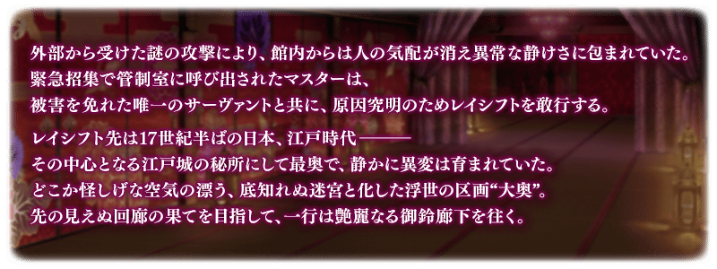
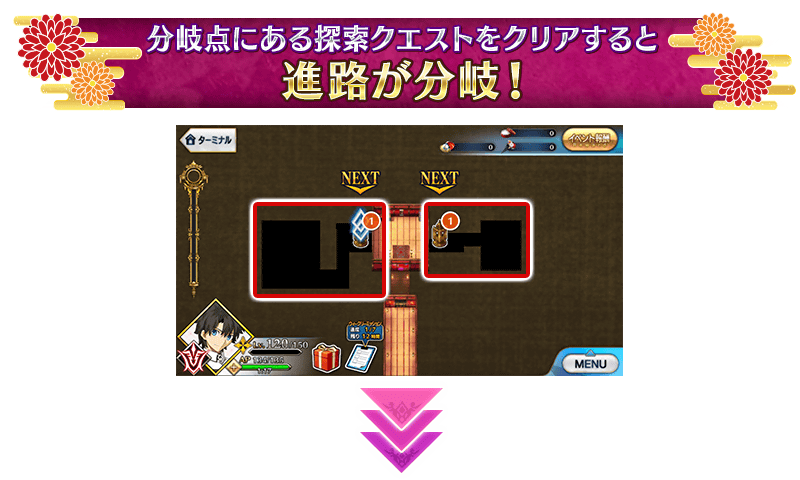
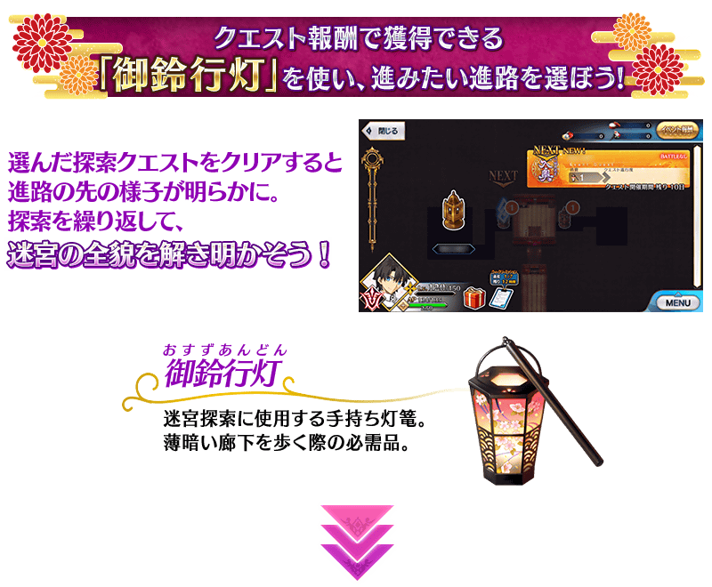
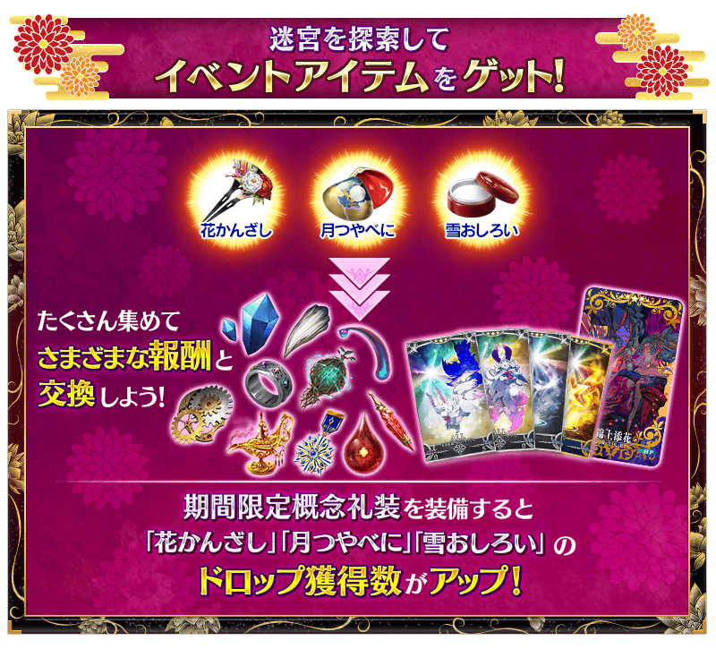
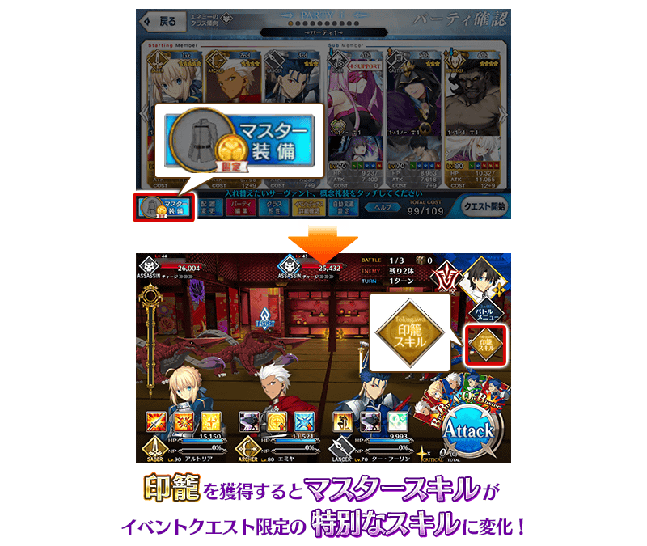
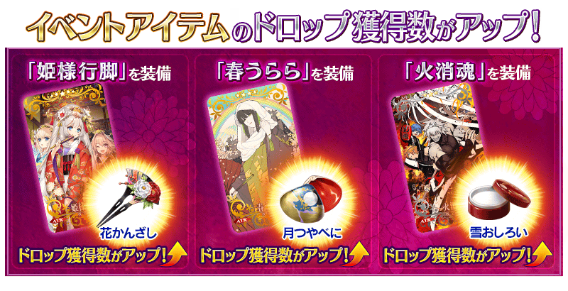
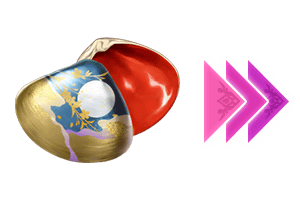

◆活動舉辦期間◆
2019年3月27日(三) 17:00～4月10日(三) 11:59
◆活動概要◆
舉辦期間限定活動「徳川廻天迷宮 大奥」！
為了應對從外部原因不明的攻擊，Master趕緊靈子轉移到做為該原因的特異點。
在化作巨大地下迷宮的江戸城・大奥舞台，以被謎團壟罩的最下層為目標開始探索。
本活動中，由複數階層構成的地圖，朝向下個階層前進。
從好幾條通路之中，持續發掘前往最深處的路線吧！
另外，本活動中1位新Servant登場！
新期間限定Servant「★5(SSR)伽摩」由於在同時預定舉辦的期間限定「徳川廻天迷宮 大奥Pick Up召喚」Pick Up，敬請確認。
※本頁面圖片皆為開發中。會有與實際圖片有所差異的情況。 ※一部份的關卡為日後開放。
◆活動參加條件◆
滿足以下條件的Master才能參加
・通過第2部 第3章「Lostbelt No.3 人智統合真國 SIN 紅之月下美人」
※不需要通過亞種特異點(從Ⅰ到Ⅳ)。
◆有關Servant真名的注意◆
在2018年12月31日(二) 23:00以後新配信的主線故事及期間限定活動、一部份關卡、宣傳活動及召喚中，會顯示隱藏真名的對象Servant真名。
※已經配信的主線故事、復刻活動、一部份關卡中不在此限。

在「Fate/Grand Order」官方網站內首頁及Gallery，公開了期間限定活動「徳川廻天迷宮 大奥」的電視廣告。敬請確認。
動畫製作：A-1 Pictures



本活動中，會在特定時機出現複數的地點。
地點內存在著為了前進該道路的關卡。
攻略任何地點內關卡的話會出現新的地點，可前進到道路的前方。
在迷宮內複數道路之中選擇喜愛的一條，能自由地探索。
不過，根據道路會有進續前進與在此打住的結果。
由於迷宮內暗藏著選擇前進道路的提示，以各式各樣的情報為依據，持續翻掘出前往大奥最深處的道路吧！
※在消耗「御鈴行燈」的戰鬥敗北或撤退的情況，不會消耗「御鈴行燈」。


探索迷宮的話可入手「印籠」。
入手「印籠」後，在活動關卡的戰鬥中可使用的Master技能，會從魔術禮裝變化成「印籠」獨自的技能。
※「印籠」入手後，無法使用裝備魔術禮裝的Master技能，魔術禮裝經驗值是裝備的魔術禮裝獲得。
※期間限定活動「徳川廻天迷宮 大奥」以外的關卡中，Master技能不會變化。


【4月4日(四) 17:00追記】
以通過期間限定活動「徳川廻天迷宮 大奥」主線關卡的Master做為對象，開放高難易度的挑戰關卡。
挑戰關卡就算通過後也不會消失，能無數次挑戰，可以變更Servant和概念禮裝的組合後再次挑戰。
※關卡通過報酬、戰利品、Master經驗值、魔術禮裝經驗值、絆點數只可在初次通過時獲得。
◆挑戰關卡開放時間◆
2019年4月4日(四) 17:00～
◆挑戰關卡參加條件◆
滿足以下條件的Master才能參加
・通過期間限定活動「徳川廻天迷宮 大奥」的主線關卡
◆挑戰關卡初次通過報酬◆
傳承結晶 1個

超值攻略方法・其1
本活動的期間中，活動加成對象Servant在活動關卡中會得到「自身的攻擊威力提升」加成。
另外一部份的Servant也會得到「絆點數獲得量提升」加成！
※活動加成的效果量因Servant而異。 ※自3月24日(日) 16:00，在Servant選擇畫面和Servant強化畫面等，追加活動加成篩選器。由於是只顯示於活動活躍Servant的便利功能，敬請活用。
▶得到2種活動加成的Servant
下表的Servant在活動關卡中會得到「自身的攻擊威力提升」與「絆點數獲得量提升」的加成。
※「絆點數獲得量提升」的對象因Servant而異。 ※瑪琇・基利艾拉特的「我方全體的絆點數獲得量提升」效果，在支援時變為無效。
【活動加成的效果量與對象Servant】
| 自身的 攻擊威力 |
絆點數 獲得量 |
職階 | 稀有度 | Servant名 |
|---|---|---|---|---|
| ＋100% | 只有自身 ＋50％ |
Assassin | ★★★★★ | 伽摩 |
| ＋50% | 只有自身 ＋20％ |
Saber | ★★★★ | 柳生但馬守宗矩 |
| Lancer | ★★★★ | 帕爾瓦蒂 | ||
| Caster | ★★★★★ | 不夜城的Caster (雪赫拉莎德) | ||
| Assassin | ★ | 瑪塔・哈里 | ||
| Alterego | ★★★★★ | 殺生院祈荒 | ||
| 我方全體 ＋5％ |
Shielder | ★★★ | 瑪琇・基利艾拉特 |
▶其他的Servant
下表的Servant在活動關卡中會得到「自身的攻擊威力提升」的加成
【活動加成的效果量與對象Servant】
| 自身的 攻擊威力 |
職階 | 稀有度 | Servant名 |
|---|---|---|---|
| ＋30% | Saber | ★★★★★ | 沖田總司 |
| ★★★★★ | 紅閻魔 | ||
| ★★★★★ | 宮本武藏 | ||
| ★★★★★ | 兩儀式 | ||
| ★★★★ | 鈴鹿御前 | ||
| Archer | ★★★★ | Archer・地獄(巴御前) | |
| ★★★★ | 淺上藤乃 | ||
| ★★★★ | 織田信長 | ||
| ★★★ | 俵藤太 | ||
| Lancer | ★★★ | 寶藏院胤舜 | |
| ★★ | 武藏坊弁慶 | ||
| Rider | ★★★★ | 坂田金時 | |
| ★★★★ | 坂本龍馬 | ||
| ★★★ | 牛若丸 | ||
| Caster | ★★★★★ | 玉藻前 | |
| ★★★★★ | 紫式部 | ||
| Assassin | ★★★★★ | 刑部姬 | |
| ★★★★★ | 酒吞童子 | ||
| ★★★★ | Assassin・樂園(望月千代女) | ||
| ★★★★ | 加藤段藏 | ||
| ★★★★ | 兩儀式 | ||
| ★★★ | 岡田以藏 | ||
| ★★★ | 風魔小太郎 | ||
| ★ | 佐佐木小次郎 | ||
| Berserker | ★★★★★ | 坂田金時 | |
| ★★★★★ | 土方歲三 | ||
| ★★★★★ | 源賴光 | ||
| ★★★★ | 茨木童子 | ||
| ★★★★ | 茶茶 | ||
| ★★★ | 清姬 | ||
| Ruler | ★★★★★ | 天草四郎 | |
| Alterego | ★★★★★ | 沖田總司〔Alter〕 | |
| ★★★★★ | 志度內 | ||
| Foreigner | ★★★★★ | 葛飾北齋 |
※就算成為對象Servant，也會有未在本活動主線劇本登場的情況。
超值攻略方法・其2
裝備活動限定概念禮裝會提升自身的攻擊威力！
裝備可靠活動道具交換入手的活動限定概念禮裝「錦上添花」的話，在期間限定活動「徳川廻天迷宮 大奥」的活動關卡中會提升自身的攻擊威力。
超值攻略方法・其3
裝備期間限定概念禮裝會提升活動道具的掉落獲得數！
裝備在聖晶石召喚Pick Up的期間限定概念禮裝「姫様行脚」「春うらら」「火消魂」的話，會提升活動道具「花髮簪」「月艷紅」「雪白粉」各自的掉落獲得數提升。
※請注意各關卡的道具掉落率並非100％。


活動道具，可自點擊管理室(ターミナル)畫面右上「活動報酬」的「活動道具交換」畫面，交換以下的道具。
◆交換期間◆
2019年3月27日(三) 17:00～4月17日(三) 11:59
※活動道具交換期間結束後「花髮簪」「月艷紅」「雪白粉」會消失。
◆能用花髮簪交換的道具◆
|
【活動限定概念禮裝】 【技能強化＆靈基再臨素材】 【靈基再臨素材】 【其他道具】 |
◆能用月艷紅交換的道具◆
|  |
【活動限定概念禮裝】 【技能強化＆靈基再臨素材】 【靈基再臨素材】 【其他道具】 |
◆能用雪白粉交換的道具◆
 |
【活動限定概念禮裝】 【技能強化＆靈基再臨素材】 【其他道具】 |

|
★★★★★SSR |

|
【活動限定】 |

|
★★★★SR |

|
★★★R |
以期間限定復刻帕爾瓦蒂的體驗關卡！
可迎接「★4(SR)帕爾瓦蒂」做為支援成員，挑戰期間限定的關卡！
別錯過體驗Servant技能與寶具的機！
※已通過「帕爾瓦蒂體驗關卡」的情況，無法再次遊玩「帕爾瓦蒂體驗關卡」。
◆帕爾瓦蒂體驗關卡舉辦期間◆
2019年3月27日(三) 17:00～
4月10日(三) 11:59
◆開放條件◆
滿足以下條件的Master才能參加
・通過「特異點F 炎上汙染都市 冬木」
◆關卡通過報酬◆
呼符 1張

其他還有，期間限定「徳川廻天迷宮 大奥Pick Up召喚」同時舉辦！
關於詳情，請自下述橫幅確認。